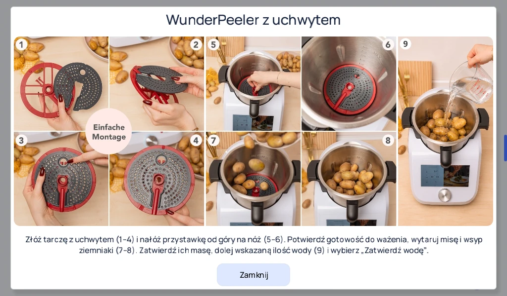
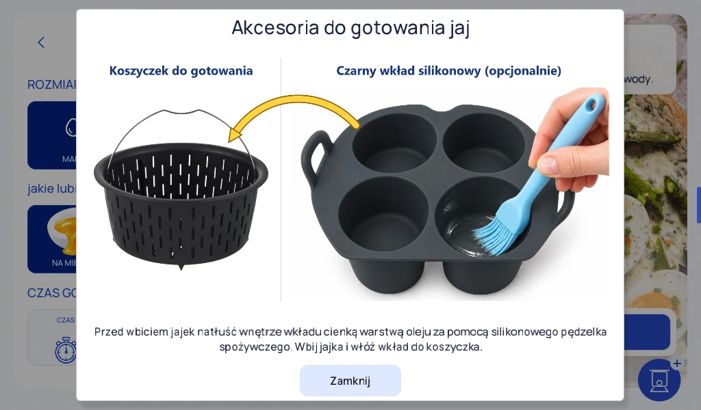
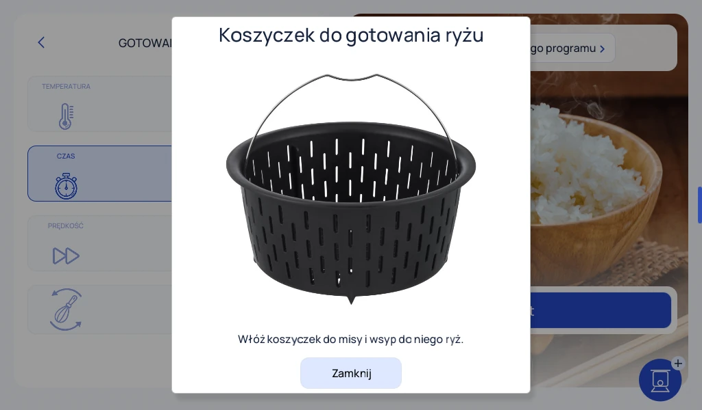
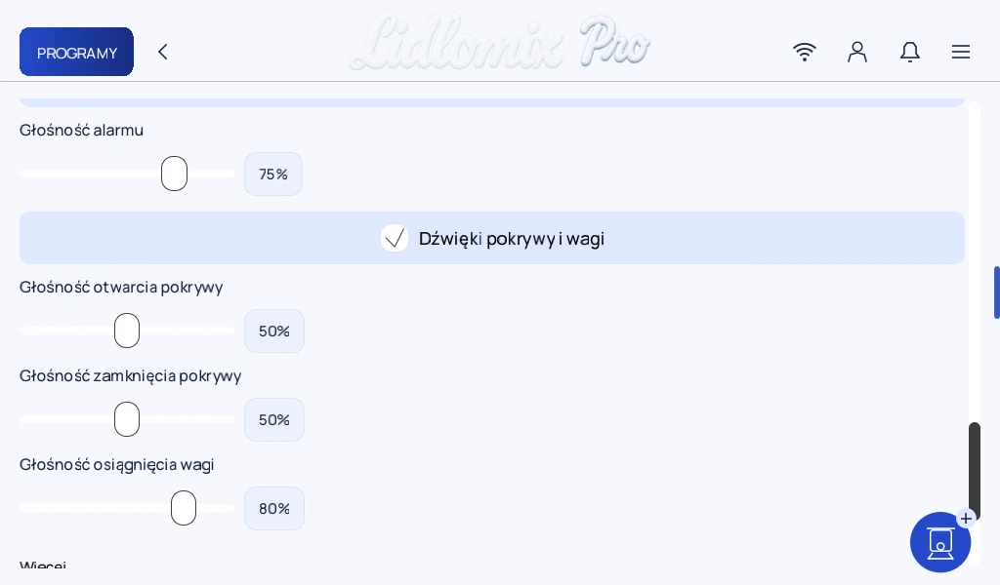
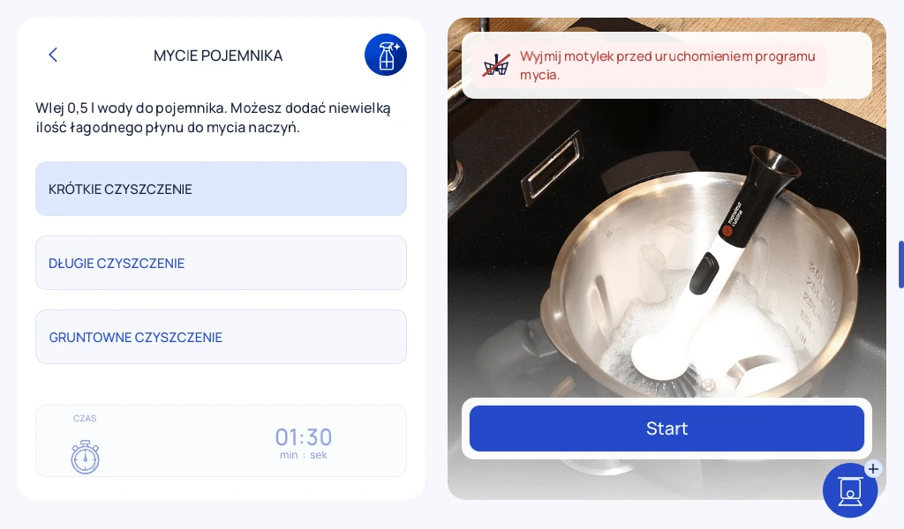
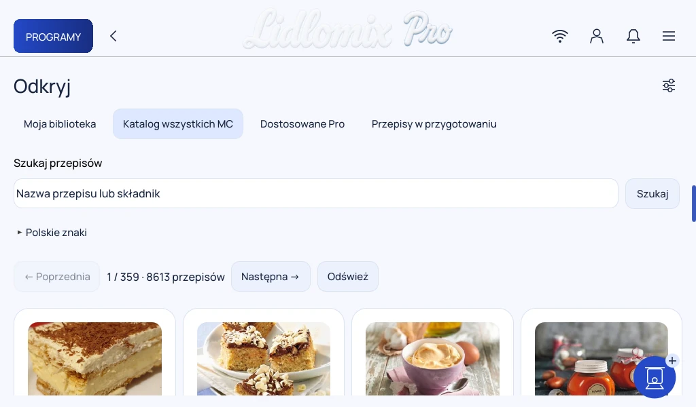
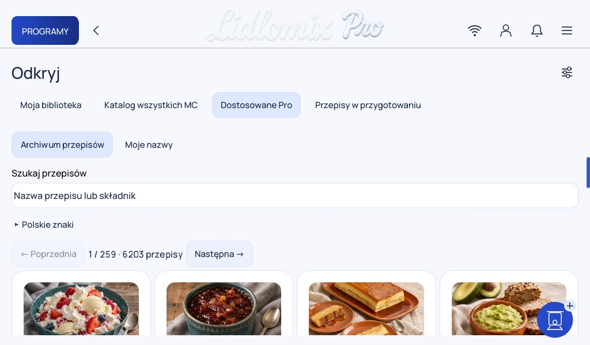
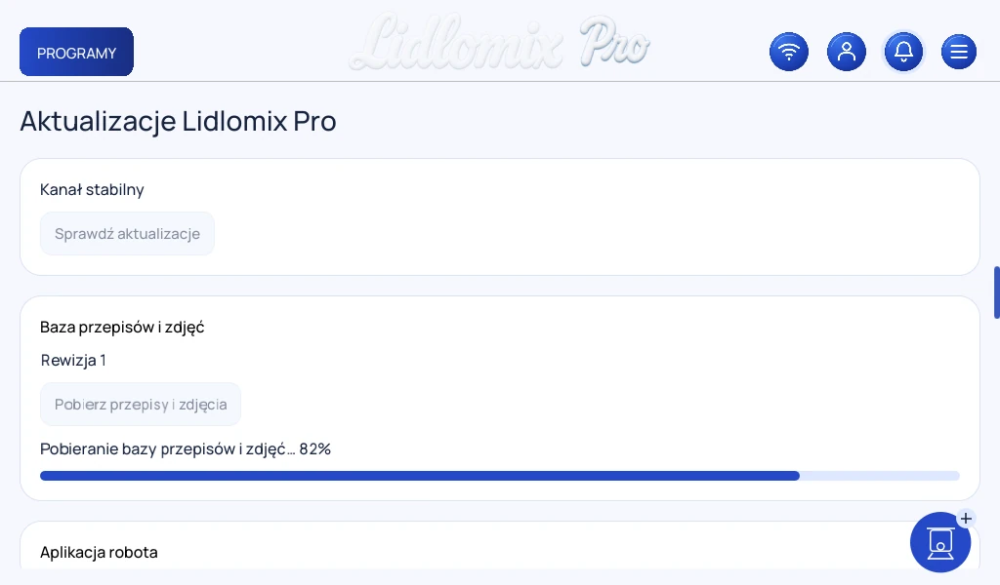
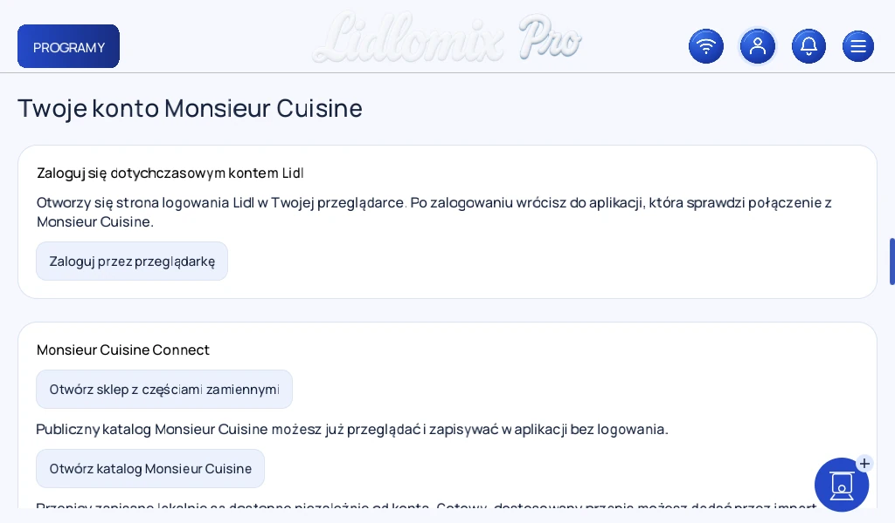

Monsieur Cuisine Connect ·
Lidlomix Pro od 0.17.8 do 0.19.1
Kolejne wersje przyniosły obieranie ziemniaków z ważeniem, instrukcje montażu akcesoriów oraz aktualizacje bazy przepisów przez internet. Poniżej są zrzuty z Connecta, najnowsze grafiki akcesoriów i lista zmian w poszczególnych wersjach.
Obieranie ziemniaków i podpowiedzi w programach
W programie obierania waga czeka na potwierdzenie gotowości. To daje czas na założenie WunderPeelera od góry na nóż. Po wytarowaniu misy zatwierdza się kolejno masę ziemniaków i ilość dolanej wody. Ekran zachowuje zatwierdzony odczyt, żeby można było zamknąć misę. Aktualna instrukcja ma dziewięć pól i kończy się pokazaniem dolewania wody.

Przycisk Akcesoria do tego programu otwiera instrukcję dla wybranego programu. Przystawka do krojenia ma widok elementów i niebieski schemat montażu w misie. Domyślny czas krojenia wynosi minutę. W Gotowaniu jaj widać koszyczek i opcjonalny czarny wkład silikonowy. Żółta strzałka pokazuje, gdzie włożyć foremkę, a ilustracja przypomina o natłuszczeniu jej olejem przed wbiciem jajek.



Gotowanie na parze pokazuje kolejne elementy parowaru. Gotowanie ryżu i Sous-vide pokazują koszyczek. W Sous-vide tarcza oznacza zalecenie, by zabezpieczyć woreczek próżniowy w koszyczku, a żółta cytryna wyróżnia wskazówkę o dodaniu 30 g soku z cytryny.




Sygnał wagi, grzanie i mycie
Do ustawień dźwięku dołączyły głośność otwarcia i zamknięcia pokrywy oraz osobna głośność sygnału osiągnięcia zadanej masy. W kolejnej poprawce wzmocniono sam plik sygnału wagi. W Podgrzewaniu wody sterownik Connecta wykorzystuje nastawę grzania odpowiadającą 120°C, żeby szybciej dojść do celu 100°C. Odczyt temperatury pozostaje widoczny po zakończeniu programu.
W krótkim i długim czyszczeniu obroty rosną stopniowo do przewidzianej prędkości, o jeden poziom co pół sekundy. Przed zmianą kierunku ostrze wyhamowuje przez co najmniej trzy sekundy. Komunikat o zdjęciu motylka pojawia się w programie mycia, w Smoothie, w Miksowaniu na purée i przy prędkościach 5–10 we Własnych ustawieniach.




Katalog i aktualizacje przez internet
W zakładce Katalog wszystkich MC przepisy korzystają ze źródła fabrycznego. Dostosowane Pro ma osobny katalog, do którego trafiają aktualizacje przepisów i zdjęć. Można przełączyć się z pobranej bazy na katalog wbudowany. Widok Moje nazwy ma filtry „Wszystkie”, „Zakładki” i „Utworzone”.




Menu Aktualizacje rozdziela bazę przepisów od aplikacji robota. Podczas pobierania pokazuje procent, a przy sprawdzaniu i rozpakowywaniu pokazuje nazwę etapu. Przycisk „Sprawdź aktualizacje” jest wyrównany z pozostałymi polami. Na Connect sprawdziłem pobieranie stabilnej rewizji bazy oraz przejście do komunikatu „Katalog zweryfikowany”. Instalację przepisów potwierdza użytkownik. W trakcie tej próby w kanale stabilnym była dostępna aktualizacja bazy.

Ustawienia, Firefox i części zamienne
Ustawienia dostały większe ikony w stylu kafelków na ekranie programów. Ikony Wi-Fi, konta, aktualizacji i menu na górnym pasku są mniejsze. Po lewej przycisk nadal przełącza „Programy” i „Przepisy”. Dodatkowa strzałka cofania została usunięta.
Przycisk logowania do konta Monsieur Cuisine uruchamia formularz logowania Lidl bezpośrednio w Firefoksie. Na tym samym ekranie przycisk „Otwórz sklep z częściami zamiennymi” prowadzi do kategorii Connect w sklepie Monsieur Cuisine. Na urządzeniu sprawdziłem otwarcie obu stron.

Lista zmian od 0.17.8
- 0.17.8 — domyślna głośność tapnięć 10%. Poprzedni wpis i zrzuty.
- 0.17.9 — pierwszy program „Obieranie ziemniaków” z ekranem ważenia, wskazówkami i obsługą WunderPeelera.
- 0.18.0 — uporządkowanie nagłówków i pól w programach obierania i krojenia warzyw.
- 0.18.1 — wersja testowa obierania z automatyczną zmianą kierunku w trakcie cyklu.
- 0.18.2 — zmiana czasu pierwszej fazy w próbnym cyklu obierania.
- 0.18.3 — pierwsza kompilacja z dodatkowymi dźwiękami pokrywy i osiągnięcia masy.
- 0.18.4 — osobne suwaki głośności dla otwarcia pokrywy, zamknięcia pokrywy i osiągnięcia wagi.
- 0.18.5 — korekta dźwięków i sprawdzenie, czy ustawienia głośności zostają zapisane po aktualizacji.
- 0.18.6 — pierwsza wersja robota z ekranem aktualizacji przez internet i obsługą kanału beta.
- 0.18.7 — próba pobrania i otwarcia testowej aktualizacji katalogu ze zdjęciem.
- 0.18.8 — próby paczki przyrostowej bazy oraz przekazania zweryfikowanej aktualizacji aplikacji do instalatora Androida.
- 0.18.9 — rozdzielenie źródeł przepisów „Katalog wszystkich MC” i „Dostosowane Pro”.
- 0.19.0 — osobny widok „Moje nazwy” i jego filtry w Dostosowane Pro.
- 0.19.1 — przejście klienta aktualizacji na kanał stabilny i próba prawdziwej paczki bazy na Connect.
- Późniejsze kompilacje 0.19.1 — potwierdzanie ważenia w obieraniu, zmiany podgrzewania i mycia, grafiki akcesoriów, ostrzeżenia o motylku, odświeżone ikony, logowanie w Firefoksie, sklep z częściami i pasek aktualizacji.
Wróć do historii aktualizacji · Podziel się uwagami na forum